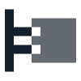
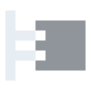

concepts and bridges
A concept can have several definitions. Bridges prove them equivalent, so a theorem written for one holds for the others.
verkodo writes knowledge down formally instead of as prose – mathematics first, then German and, later, European law. A concept can have several definitions, joined by bridges that prove them equivalent; a lecture, a guide or a commentary is a path through them; Lean 4 checks the proofs. Text, PDF and web pages in any language are generated from it, and every word in them is explained down to its foundations – the links come from the formalisation, nobody sets them by hand.
verkodo is free software – everything included, no telemetry. It is at its beginning; version 0.2
can be tried: cargo install verkodo (Rust 1.99 or later), then verkodo serve for
the web editor.


A concept can have several definitions. Bridges prove them equivalent, so a theorem written for one holds for the others.
A lecture, a guide or a commentary is a path through the formal world – verkodo checks that every step uses only what came before.
Proofs are checked by Lean 4, rules of law are typed and can be run. What is not proved yet is marked open.
Text, PDF and web pages in any language are generated. Hover a word to see where it comes from, down to the foundations.
vero truth
kodo code
→ verkodo
verkodo joins two Esperanto words: vero, truth, and kodo, code – a system of signs, and the text of a program. Put together they make a truth code: knowledge written down so that a machine can check that it holds. Both words are in the Reta Vortaro, one of the standard dictionaries; the compound is new. Said ver-KO-do, stressed on the second-to-last syllable like every Esperanto word.
Write to support@falkoss.org – verkodo is published by falkOSS.